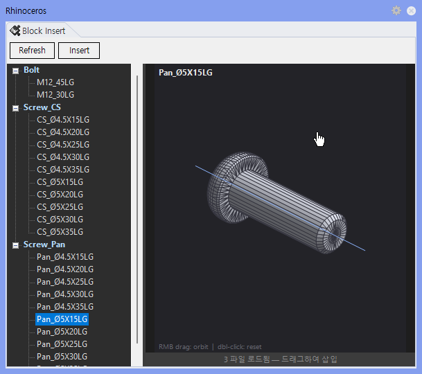

BlockOpt
BlockOpt는 RCWFolder 로 열리는 폴더 안의 Blocks 에 저장된 .3dm Block 파일을 읽어 별도 패널에 목록과 미리보기를 보여주고, 선택한 Block을 현재 Rhino 화면에 Insert하는 명령입니다.
BlockOpt 는 RCWFolder 로 열리는 폴더 안의 Blocks 에 저장된 . 3dm Block 파일을 읽어 별도 패널에 목록과 미리보기를 보여주고, 선택한 Block을 현재 Rhino 화면에 Insert하는 명령입니다.
RCWFolder 를 실행해 폴더를 열고, 그 안의 Blocks 에 쓸 Block 이 든 .3dm 파일을 넣습니다.BlockOpt를 입력합니다.
| 항목 | 설명 |
|---|---|
| Block 폴더 | RCWFolder 로 열리는 폴더 안의 Blocks 에서 .3dm 파일을 읽습니다. 경로를 외울 필요가 없습니다. |
| 기본 제공 파일 | Bolt.3dm, Screw_CS.3dm, Screw_Pan.3dm 같은 자주 사용하는 Block 파일을 관리합니다. |
| 미리보기 | 선택한 Block의 3D 형상을 패널 오른쪽에서 확인합니다. |
| 삽입 | Insert 버튼을 누른 뒤 Rhino 뷰포트에서 위치를 지정하면 현재 문서에 Block Instance를 삽입합니다. |
| 항목 | 설명 |
|---|---|
| TreeView | .3dm 파일별 Block 이름을 표시합니다. 같은 이름의 Block은 먼저 발견된 파일의 항목만 표시합니다. |
| Preview | 선택한 Block의 Brep, Mesh, Surface, Curve 형상을 간단한 Shaded Wire 형태로 보여줍니다. |
| Refresh | Block 폴더를 다시 읽어 목록을 갱신합니다. |
| Insert | 선택 Block 정의를 현재 Rhino 문서에 추가하고, 지정한 위치에 Instance를 삽입합니다. |
| 항목 | 설명 |
|---|---|
| 동작 방식 | 명령을 실행하면 Block Insert Panel을 열고, 이미 열려 있으면 패널을 닫습니다. |
Blocks 폴더가 비었거나 .3dm 파일 안에 Block Definition이 없으면 목록이 비어 있을 수 있습니다.